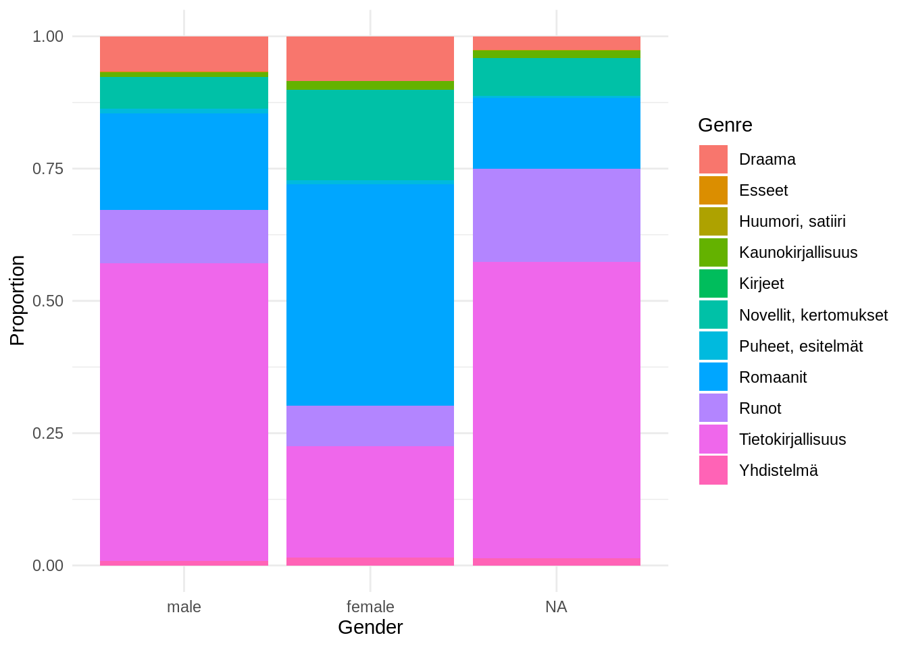
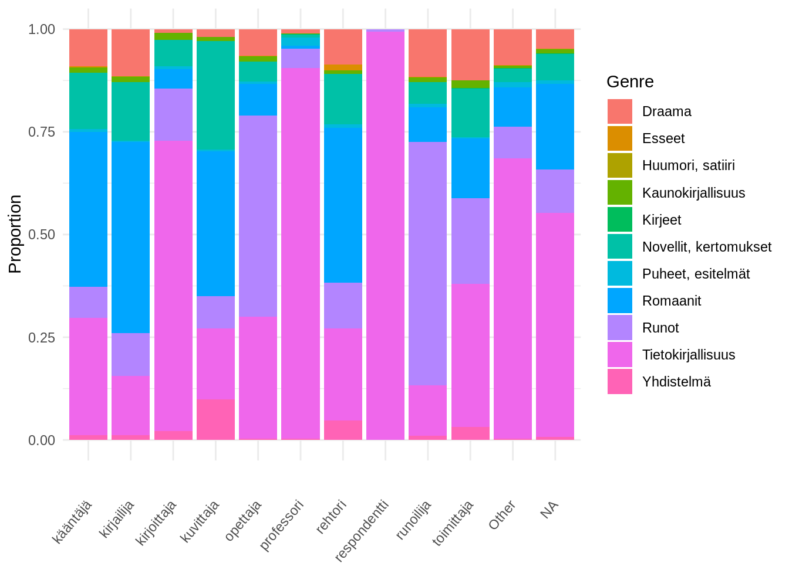

library(dplyr)
library(tidyr)
library(stringr)
library(janitor) # tabyl()
library(ggplot2)
library(nnet)
library(forcats)Genre and publishing metadata: exploratory association tests and probabilistic modeling
Introduction
This Quarto notebook documents a step-by-step workflow for assessing whether genre is associated with selected bibliographic metadata variables before fitting a full multivariable model. The response variable is genre, and the predictors are gender, language, publication_place, and publisher_size (large/medium/small). All variables are categorical.
The workflow is intentionally staged. First, simple descriptive summaries and association tests are used to evaluate whether relationships are present at all. Next, models are introduced only after basic structure has been established. The final stage estimates genre probabilities under a Bayesian framework, enabling probabilistic interpretation and uncertainty quantification.
Criteria: books published in Finland, Sweden or Russia in 1809-1917. Genre (outcome) Nominal categorical (K>2) Gender Categorical Language Categorical Publication place Categorical (20 cities) Publisher size Categorical (3 levels)
Gender male vs female Language Finnish vs Swedish Publisher size small / medium / large Place 19 dummies (reference = largest city)
multinomial logistic regression for each k P(genre=k∣gender, language, place, publisher) # Data and setup
Packages
Load the data
# # Download the csv file
url <- "https://a3s.fi/swift/v1/AUTH_3c0ccb602fa24298a6fe3ae224ca022f/fennica-container/harmonized/books_19th.tsv"
df <- read.table(
file = url,
sep = "\t",
header = TRUE,
colClasses = "character",
fileEncoding = "UTF-8",
quote = "\"",
comment.char = "",
stringsAsFactors = FALSE
)
head(df, 10) melinda_id data_element genre_008 record_type biblio_level
1 000864216 Kirjat Romaanit Language material Monograph/Item
2 000864217 Kirjat Tietokirjallisuus Language material Monograph/Item
3 000864220 Kirjat Tietokirjallisuus Language material Monograph/Item
4 000864223 Kirjat Puheet, esitelmät Language material Monograph/Item
5 000864224 Kirjat Tietokirjallisuus Language material Monograph/Item
6 000864226 Kirjat Tietokirjallisuus Language material Monograph/Item
7 000864227 Kirjat Puheet, esitelmät Language material Monograph/Item
8 000864230 Kirjat Puheet, esitelmät Language material Monograph/Item
9 000864233 Kirjat Draama Language material Monograph/Item
10 000864234 Kirjat Draama Language material Monograph/Item
publication_status author_name
1 Single known date/probable date Malot, Hector
2 Single known date/probable date Mangasarian, Mangasar Mugurditch
3 Single known date/probable date Louhivuori, Oskar Wilhelm
4 Single known date/probable date Lunde, Albert G
5 Single known date/probable date Manner, Viktor
6 Single known date/probable date Manner, Viktor
7 Single known date/probable date Lunde, Albert G
8 Single known date/probable date Lunde, Albert G
9 Single known date/probable date Mantero, Jussi
10 Single known date/probable date Mantero, Jussi
author_name_enriched
1 Malot, Hector | Malot, Hector Henri
2 Mangasarian, Mangasar Mugurditch | Monisti | Rautell, Emil Frithiof
3 Louhivuori, Oskar Wilhelm | Louhivuori, O V | Louhivuori, Oskari Wilho
4 Lunde, Albert G
5 Manner, Viktor | Manner, Antero Viktor
6 Manner, Viktor | Manner, Antero Viktor
7 Lunde, Albert G
8 Lunde, Albert G
9 Mantero, Jussi
10 Mantero, Jussi
gender gender_primary author_birth
1 male| male male <NA>
2 male| male male <NA>
3 male| male| male| male male 69
4 male male <NA>
5 male| male male <NA>
6 male| male male <NA>
7 male male <NA>
8 male male <NA>
9 male male <NA>
10 male male <NA>
title
1 Kosto : romaani
2 Uusi Katkismus eli maailma ilman Jumalaa
3 Den sociala alkoholfrågan : nykterhetens Vänners tavlor för åskådningsundervisning, 3:dje serien : förklaringar och källförteckning
4 Gören bättring och tron evangelium : tal hållet i Helsingfors den 4 mars 1912
5 Asunto-olosuhteet Hämeenlinnan kaupungissa v. 1908
6 Terveys- ja sairashoidolliset olot Hämeenlinnan kaupungissa
7 Jerusalems vittnen : tal hållet i Nikolaikyrkan den 26 februari 1912
8 Seger : tal hållet i Helsingfors d. 26 februari 1912
9 Lempeä ja lemmen leikkiä : yksinäytöksinen kuvaus
10 Viimeinen Villitys : yksinäytöksinen ilveily
title_length title_word language language_primary language_multi lang_orig
1 16 3 Finnish Finnish FALSE und
2 40 6 Finnish Finnish FALSE eng
3 132 15 Swedish Swedish FALSE
4 78 14 Swedish Swedish FALSE
5 50 5 Finnish Finnish FALSE
6 59 6 Finnish Finnish FALSE
7 69 11 Swedish Swedish FALSE
8 53 10 Swedish Swedish FALSE
9 50 7 Finnish Finnish FALSE
10 45 5 Finnish Finnish FALSE
publication_year_from publication_year_till publication_year
1 1910 <NA> 1910
2 1907 <NA> 1907
3 1912 <NA> 1912
4 1912 <NA> 1912
5 1909 <NA> 1909
6 1909 <NA> 1909
7 1912 <NA> 1912
8 1912 <NA> 1912
9 1908 <NA> 1908
10 1910 <NA> 1910
publication_decade publication_place publication_country
1 1910 Lappeenranta Finland
2 1900 Kuopio Finland
3 1910 Helsinki Finland
4 1910 Helsinki Finland
5 1900 Hämeenlinna Finland
6 1900 Hämeenlinna Finland
7 1910 Helsinki Finland
8 1910 Helsinki Finland
9 1900 Kuopio Finland
10 1910 Kuopio Finland
publisher
1 osuuskunta saimaa
2 savon työväen sanomalehti osuuskunta
3 kustantaja tuntematon
4 svenska k f u m
5 kustantaja tuntematon
6 enok rytkönen jakelija
7 svenska k f u m
8 svenska k f u m
9 u w telen co
10 u w telen co
signum udk_orig udk_harm udk_aux
1 Suom. kaunokirj. 2 -1972 <NA> <NA>
2 Hartauskirj. -1972 <NA> <NA>
3 Raittius 3 -1972;Käsifilmistö - filmikortit <NA> <NA>
4 Mf.;K.Saarnakirj. -1972 <NA> <NA>
5 Lääketiede 3 -1972 <NA> <NA>
6 Lääketiede 3 -1972 <NA> <NA>
7 K.Saarnakirj. -1972;Mf. <NA> <NA>
8 K.Saarnakirj. -1972;Mf. <NA> <NA>
9 Suom. kaunokirj. 4 -1972 894.541 894.541 -2
10 Suom. kaunokirj. 4 -1972 894.541 894.541 -2
udk udk_primary udk_multi
1 <NA> <NA> <NA>
2 <NA> <NA> <NA>
3 <NA> <NA> <NA>
4 <NA> <NA> <NA>
5 <NA> <NA> <NA>
6 <NA> <NA> <NA>
7 <NA> <NA> <NA>
8 <NA> <NA> <NA>
9 Suomenkielinen kirjallisuus Suomenkielinen kirjallisuus FALSE
10 Suomenkielinen kirjallisuus Suomenkielinen kirjallisuus FALSE
genre_655 author_profession genre
1 Käännökset; Översättningar <NA> Romaanit
2 <NA> <NA> Tietokirjallisuus
3 <NA> taloustieteilijä Tietokirjallisuus
4 <NA> <NA> Puheet, esitelmät
5 <NA> <NA> Tietokirjallisuus
6 Tilastot; Statistik <NA> Tietokirjallisuus
7 <NA> <NA> Puheet, esitelmät
8 <NA> <NA> Puheet, esitelmät
9 <NA> kirjailija,kääntäjä Draama
10 <NA> kirjailija,kääntäjä Draama
publisher_size code_genre
1 group_3 fiction
2 group_3 non-fiction
3 group_1 non-fiction
4 group_3 fiction
5 group_1 non-fiction
6 group_3 non-fiction
7 group_3 fiction
8 group_3 fiction
9 group_2 fiction
10 group_2 fictionCross-tabs and proportions
df <- df %>%
mutate(
gender = factor(gender_primary, levels = c("male", "female"))
)
df <- df %>%
mutate(
profession_primary = trimws(sub(",.*", "", author_profession))
)
df$profession_primary <- fct_lump_n(
factor(df$profession_primary),
n = 10,
other_level = "Other"
)Genre X Gender
tab_gender <- janitor::tabyl(df, genre, gender)
tab_gender genre male female NA_
Draama 1432 181 102
Esseet 19 0 0
Huumori, satiiri 6 0 6
Kaunokirjallisuus 172 36 55
Kirjeet 17 0 1
Novellit, kertomukset 1259 367 282
Puheet, esitelmät 197 16 16
Romaanit 3908 897 531
Runot 2148 162 692
Tietokirjallisuus 11982 453 2217
Yhdistelmä 189 31 56janitor::adorn_percentages(tab_gender, "row") %>% janitor::adorn_pct_formatting() genre male female NA_
Draama 83.5% 10.6% 5.9%
Esseet 100.0% 0.0% 0.0%
Huumori, satiiri 50.0% 0.0% 50.0%
Kaunokirjallisuus 65.4% 13.7% 20.9%
Kirjeet 94.4% 0.0% 5.6%
Novellit, kertomukset 66.0% 19.2% 14.8%
Puheet, esitelmät 86.0% 7.0% 7.0%
Romaanit 73.2% 16.8% 10.0%
Runot 71.6% 5.4% 23.1%
Tietokirjallisuus 81.8% 3.1% 15.1%
Yhdistelmä 68.5% 11.2% 20.3%tab_language <- janitor::tabyl(df, genre, profession_primary)
tab_language genre kääntäjä kirjailija kirjoittaja kuvittaja opettaja
Draama 206 276 6 8 51
Esseet 4 1 0 0 1
Huumori, satiiri 0 2 0 0 0
Kaunokirjallisuus 30 33 13 4 10
Kirjeet 0 0 0 0 0
Novellit, kertomukset 311 344 46 112 39
Puheet, esitelmät 15 9 5 2 4
Romaanit 853 1121 33 149 61
Runot 173 253 91 33 386
Tietokirjallisuus 647 348 505 73 233
Yhdistelmä 26 29 15 42 3
professori rehtori respondentti runoilija toimittaja Other NA_
9 40 0 45 110 436 528
0 7 0 1 0 5 0
0 0 0 0 0 0 10
1 4 0 4 16 30 118
1 0 2 0 2 5 8
6 57 0 21 104 160 708
16 4 0 3 3 68 100
6 176 0 33 128 467 2309
38 52 12 230 184 383 1167
736 105 2269 48 307 3368 6013
2 22 0 4 28 18 87janitor::adorn_percentages(tab_language, "row") %>% janitor::adorn_pct_formatting() genre kääntäjä kirjailija kirjoittaja kuvittaja opettaja
Draama 12.0% 16.1% 0.3% 0.5% 3.0%
Esseet 21.1% 5.3% 0.0% 0.0% 5.3%
Huumori, satiiri 0.0% 16.7% 0.0% 0.0% 0.0%
Kaunokirjallisuus 11.4% 12.5% 4.9% 1.5% 3.8%
Kirjeet 0.0% 0.0% 0.0% 0.0% 0.0%
Novellit, kertomukset 16.3% 18.0% 2.4% 5.9% 2.0%
Puheet, esitelmät 6.6% 3.9% 2.2% 0.9% 1.7%
Romaanit 16.0% 21.0% 0.6% 2.8% 1.1%
Runot 5.8% 8.4% 3.0% 1.1% 12.9%
Tietokirjallisuus 4.4% 2.4% 3.4% 0.5% 1.6%
Yhdistelmä 9.4% 10.5% 5.4% 15.2% 1.1%
professori rehtori respondentti runoilija toimittaja Other NA_
0.5% 2.3% 0.0% 2.6% 6.4% 25.4% 30.8%
0.0% 36.8% 0.0% 5.3% 0.0% 26.3% 0.0%
0.0% 0.0% 0.0% 0.0% 0.0% 0.0% 83.3%
0.4% 1.5% 0.0% 1.5% 6.1% 11.4% 44.9%
5.6% 0.0% 11.1% 0.0% 11.1% 27.8% 44.4%
0.3% 3.0% 0.0% 1.1% 5.5% 8.4% 37.1%
7.0% 1.7% 0.0% 1.3% 1.3% 29.7% 43.7%
0.1% 3.3% 0.0% 0.6% 2.4% 8.8% 43.3%
1.3% 1.7% 0.4% 7.7% 6.1% 12.8% 38.9%
5.0% 0.7% 15.5% 0.3% 2.1% 23.0% 41.0%
0.7% 8.0% 0.0% 1.4% 10.1% 6.5% 31.5%ggplot(df, aes(x = gender, fill = genre)) +
geom_bar(position = "fill") +
labs(y = "Proportion", x = "Gender", fill = "Genre") +
theme_minimal()
ggplot(df, aes(x = profession_primary, fill = genre)) +
geom_bar(position = "fill") +
labs(y = "Proportion", x = "", fill = "Genre") +
theme_minimal() +
theme(
axis.text.x = element_text(angle = 50, vjust = 0.5, hjust = 1)
)
multinomial linear regression
df$gender <- fct_explicit_na(factor(df$gender), na_level = "Unknown")
df$profession <- fct_explicit_na(factor(df$profession_primary), na_level = "Unknown")
model_freq <- multinom(
genre ~ gender + profession,
data = df
)# weights: 165 (140 variable)
initial value 65774.267333
iter 10 value 37108.840839
iter 20 value 34853.024115
iter 30 value 33565.128196
iter 40 value 33267.629373
iter 50 value 33108.894870
iter 60 value 33068.059621
iter 70 value 33062.142230
iter 80 value 33057.809121
iter 90 value 33055.556511
iter 100 value 33054.845706
final value 33054.845706
stopped after 100 iterationssummary(model_freq)Call:
multinom(formula = genre ~ gender + profession, data = df)
Coefficients:
(Intercept) genderfemale genderUnknown
Esseet -3.8040891 -4.9067357 -2.5148265
Huumori, satiiri -8.8258307 -4.3310931 1.7516091
Kaunokirjallisuus -2.0126143 0.4651468 1.3488722
Kirjeet -10.0094076 -4.8527114 -0.6084198
Novellit, kertomukset 0.2705865 0.7469405 1.1222738
Puheet, esitelmät -2.5867865 -0.2701653 -0.2290008
Romaanit 1.3438031 0.4820739 0.3124429
Runot -0.1493660 -0.4994830 1.6983739
Tietokirjallisuus 1.2105912 -0.8264212 0.8377702
Yhdistelmä -2.1413535 0.2989499 1.8922703
professionkirjailija professionkirjoittaja
Esseet -1.60701679 -3.72727052
Huumori, satiiri 4.08916516 0.79272137
Kaunokirjallisuus -0.21836913 2.73390630
Kirjeet -5.21274437 -0.02125013
Novellit, kertomukset -0.23731178 1.67665379
Puheet, esitelmät -0.79177241 2.43145875
Romaanit -0.04995241 0.30928080
Runot 0.12958747 2.88793938
Tietokirjallisuus -0.87324817 3.26396941
Yhdistelmä -0.18244705 3.01488629
professionkuvittaja professionopettaja
Esseet -4.08180435 0.04221004
Huumori, satiiri 0.02525329 -0.95523565
Kaunokirjallisuus 1.22787496 0.28868587
Kirjeet -0.65083342 -2.30150407
Novellit, kertomukset 2.22126274 -0.69717248
Puheet, esitelmät 1.23769228 0.07917835
Romaanit 1.50014961 -1.25438954
Runot 1.59054415 2.22138135
Tietokirjallisuus 1.06751864 0.39183842
Yhdistelmä 3.72327130 -0.75732547
professionprofessori professionrehtori
Esseet -4.6442223 2.06161938
Huumori, satiiri 0.3645733 -1.41511668
Kaunokirjallisuus -0.1992758 -0.29347910
Kirjeet 7.8429748 -2.84413103
Novellit, kertomukset -0.7109354 0.08284068
Puheet, esitelmät 3.1679559 0.28552137
Romaanit -1.7635010 0.13818180
Runot 1.6002703 0.41665520
Tietokirjallisuus 3.2088358 -0.24173085
Yhdistelmä 0.6285321 1.54365209
professionrespondentti professionrunoilija
Esseet 1.6806985 0.05953787
Huumori, satiiri 3.5233457 -1.28518958
Kaunokirjallisuus 0.6667030 -0.44196624
Kirjeet 14.9053528 -2.60013684
Novellit, kertomukset 0.4800538 -1.09435952
Puheet, esitelmät 0.3485756 -0.10556728
Romaanit -1.1747702 -1.69086473
Runot 6.8332151 1.79539819
Tietokirjallisuus 10.7149855 -1.11823105
Yhdistelmä 0.4657163 -0.29795603
professiontoimittaja professionOther professionUnknown
Esseet -6.9112090 -0.58382537 -5.09648889
Huumori, satiiri -1.8220014 -0.63007333 4.28020046
Kaunokirjallisuus 0.0126114 -0.71576911 0.05426182
Kirjeet 6.1181430 5.61854781 6.02282502
Novellit, kertomukset -0.4487840 -1.35685921 -0.37539985
Puheet, esitelmät -0.9855764 0.74623189 0.98507086
Romaanit -1.2571386 -1.31930269 0.01200172
Runot 0.6783271 0.02900084 0.36112977
Tietokirjallisuus -0.1309523 0.86859057 1.04891322
Yhdistelmä 0.7053466 -1.09210197 -0.39279318
Std. Errors:
(Intercept) genderfemale genderUnknown
Esseet 0.50562911 9.65140172 13.6078628
Huumori, satiiri 6.04645106 8.80662107 0.6509307
Kaunokirjallisuus 0.19877671 0.20172724 0.2127673
Kirjeet 10.79932749 8.99364449 1.0681789
Novellit, kertomukset 0.09169807 0.10066804 0.1334804
Puheet, esitelmät 0.26870849 0.27388174 0.2938271
Romaanit 0.07869436 0.08882196 0.1203330
Runot 0.10401126 0.11711355 0.1235037
Tietokirjallisuus 0.08078918 0.09472904 0.1128163
Yhdistelmä 0.21105023 0.21486137 0.2299374
professionkirjailija professionkirjoittaja
Esseet 1.1179069 18.4032467
Huumori, satiiri 6.0878643 24.2241839
Kaunokirjallisuus 0.2690271 0.5307807
Kirjeet 1.2915221 64.8660142
Novellit, kertomukset 0.1214186 0.4433558
Puheet, esitelmät 0.4315220 0.6606189
Romaanit 0.1029545 0.4505460
Runot 0.1352333 0.4338836
Tietokirjallisuus 0.1138152 0.4183187
Yhdistelmä 0.2858885 0.5261348
professionkuvittaja professionopettaja
Esseet 19.6208759 1.1261041
Huumori, satiiri 30.9570667 20.9160658
Kaunokirjallisuus 0.6429422 0.3977317
Kirjeet 77.9331363 71.9969317
Novellit, kertomukset 0.3771572 0.2314799
Puheet, esitelmät 0.8331469 0.5836167
Romaanit 0.3712222 0.2052259
Runot 0.4075537 0.1814648
Tietokirjallisuus 0.3810459 0.1743728
Yhdistelmä 0.4384779 0.6297330
professionprofessori professionrehtori
Esseet 23.0962715 0.6513947
Huumori, satiiri 24.0122919 27.2262120
Kaunokirjallisuus 1.0715639 0.5615921
Kirjeet 10.8504156 3.9988163
Novellit, kertomukset 0.5355788 0.2257854
Puheet, esitelmät 0.4954998 0.5896108
Romaanit 0.5323577 0.1921471
Runot 0.3849323 0.2346706
Tietokirjallisuus 0.3448837 0.2027433
Yhdistelmä 0.8090831 0.3391482
professionrespondentti professionrunoilija
Esseet 24.9617011 1.1273773
Huumori, satiiri 0.5278589 24.6982485
Kaunokirjallisuus 17.9460656 0.5571673
Kirjeet 13.5360799 14.8338001
Novellit, kertomukset 9.8826596 0.2796489
Puheet, esitelmät 26.2797610 0.6527036
Romaanit 11.0662469 0.2423363
Runot 8.1437489 0.1931461
Tietokirjallisuus 8.1383967 0.2226012
Yhdistelmä 20.5420626 0.5604142
professiontoimittaja professionOther professionUnknown
Esseet 21.4698946 0.6760847 4.38542879
Huumori, satiiri 21.2220777 8.2107636 6.06554342
Kaunokirjallisuus 0.3310500 0.2721019 0.23439474
Kirjeet 10.8227986 10.8086437 10.80591203
Novellit, kertomukset 0.1642044 0.1293368 0.11218990
Puheet, esitelmät 0.6427784 0.2976167 0.29225451
Romaanit 0.1516419 0.1025101 0.09420482
Runot 0.1589808 0.1249492 0.12143048
Tietokirjallisuus 0.1372036 0.0950665 0.09462367
Yhdistelmä 0.2970135 0.3183561 0.26383187
Residual Deviance: 66109.69
AIC: 66389.69 RRR <- exp(coef(model_freq))
RRR (Intercept) genderfemale genderUnknown
Esseet 2.227948e-02 0.007396593 0.08087694
Huumori, satiiri 1.468894e-04 0.013153162 5.76387003
Kaunokirjallisuus 1.336389e-01 1.592247854 3.85307775
Kirjeet 4.497483e-05 0.007807180 0.54421013
Novellit, kertomukset 1.310733e+00 2.110532959 3.07183096
Puheet, esitelmät 7.526150e-02 0.763253338 0.79532789
Romaanit 3.833595e+00 1.619429480 1.36675995
Runot 8.612538e-01 0.606844343 5.46505335
Tietokirjallisuus 3.355468e+00 0.437612631 2.31120760
Yhdistelmä 1.174957e-01 1.348442131 6.63441363
professionkirjailija professionkirjoittaja
Esseet 0.200484811 0.02405841
Huumori, satiiri 59.690039455 2.20940085
Kaunokirjallisuus 0.803828672 15.39289895
Kirjeet 0.005446705 0.97897406
Novellit, kertomukset 0.788745332 5.34763171
Puheet, esitelmät 0.453041110 11.37546392
Romaanit 0.951274690 1.36244490
Runot 1.138358683 17.95627032
Tietokirjallisuus 0.417592931 26.15314396
Yhdistelmä 0.833228761 20.38677255
professionkuvittaja professionopettaja
Esseet 0.01687699 1.0431135
Huumori, satiiri 1.02557486 0.3847215
Kaunokirjallisuus 3.41396700 1.3346724
Kirjeet 0.52161088 0.1001082
Novellit, kertomukset 9.21896466 0.4979914
Puheet, esitelmät 3.44764806 1.0823973
Romaanit 4.48235961 0.2852499
Runot 4.90641802 9.2200582
Tietokirjallisuus 2.90815437 1.4796986
Yhdistelmä 41.39960317 0.4689189
professionprofessori professionrehtori
Esseet 9.617006e-03 7.85868572
Huumori, satiiri 1.439900e+00 0.24289727
Kaunokirjallisuus 8.193239e-01 0.74566481
Kirjeet 2.547773e+03 0.05818481
Novellit, kertomukset 4.911845e-01 1.08636872
Puheet, esitelmät 2.375887e+01 1.33045550
Romaanit 1.714436e-01 1.14818427
Runot 4.954371e+00 1.51687941
Tietokirjallisuus 2.475026e+01 0.78526750
Yhdistelmä 1.874856e+00 4.68165693
professionrespondentti professionrunoilija
Esseet 5.369305e+00 1.06134595
Huumori, satiiri 3.389765e+01 0.27659814
Kaunokirjallisuus 1.947805e+00 0.64277134
Kirjeet 2.973805e+06 0.07426342
Novellit, kertomukset 1.616161e+00 0.33475394
Puheet, esitelmät 1.417048e+00 0.89981393
Romaanit 3.088900e-01 0.18436003
Runot 9.281702e+02 6.02187208
Tietokirjallisuus 4.502555e+04 0.32685748
Yhdistelmä 1.593155e+00 0.74233398
professiontoimittaja professionOther professionUnknown
Esseet 9.965523e-04 0.5577606 6.118191e-03
Huumori, satiiri 1.617018e-01 0.5325527 7.225492e+01
Kaunokirjallisuus 1.012691e+00 0.4888160 1.055761e+00
Kirjeet 4.540208e+02 275.4890294 4.127430e+02
Novellit, kertomukset 6.384040e-01 0.2574682 6.870145e-01
Puheet, esitelmät 3.732241e-01 2.1090379 2.678002e+00
Romaanit 2.844669e-01 0.2673216 1.012074e+00
Runot 1.970578e+00 1.0294255 1.434950e+00
Tietokirjallisuus 8.772596e-01 2.3835490 2.854547e+00
Yhdistelmä 2.024548e+00 0.3355105 6.751684e-01